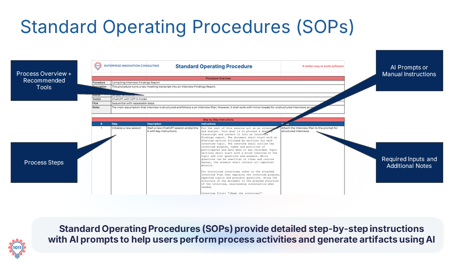

Provide detailed step-by-step instructions with AI prompts to help users perform process activities and generate artifacts.
Another essential element is Standard Operating Procedures, or SOPs. SOPs act as the operational glue between the process and the AI. They reduce variability across individuals and teams, ensuring that work is done in a consistent way.
This consistency is critical when scaling AI across an organization.
Understanding SOPs Components

PROCESS + TOOLSRECOMMENDED TOOLS: Maps specific software and LLMs to each workflow stage.
PROCESS STEPSSTEP-BY-STEP INSTRUCTIONS: Detailed actions required to execute the task.
PROMPTSAI PROMPTS: Pre-configured prompts or manual instructions.
NOTESAI PROMPTS & NOTES: Required inputs and additional notes.
Advantages of Using SPOs
Using SOPs provide several benefits:
VARIABILITY
Reduced Variability Across Teams
By establishing uniform operational steps, SOPs eliminate guesswork and ensure every team member produces standardized, high-quality outputs.
SCALABILITY
Scaling AI Across Organizations
Standardized procedures make it straightforward to roll out new AI-driven workflows across multiple departments and enterprise teams smoothly.
PROMPTING
Embedded Guidance & Inputs
SOPs specify exact inputs, additional notes, and ready-to-use AI prompts, giving users a clear path to complete tasks with confidence.
In essence, SOPs provide a clear roadmap to follow, helping users perform tasks and generate outputs with confidence.
Practice
Analysis of an SOP
RESOURCE TYPE: Interview Plan SOP.
INSTRUCTIONS: Download, read the attached SOP, and answer the following questions:
PROCESS COVERAGE: What is the main purpose of the SOP?
MAINTENANCE: Would you suggest any improvements to the SOP?